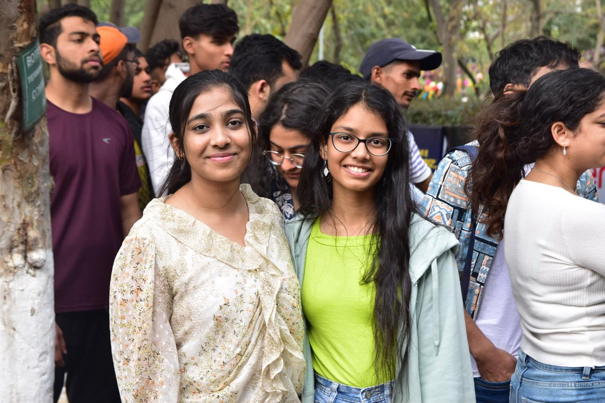
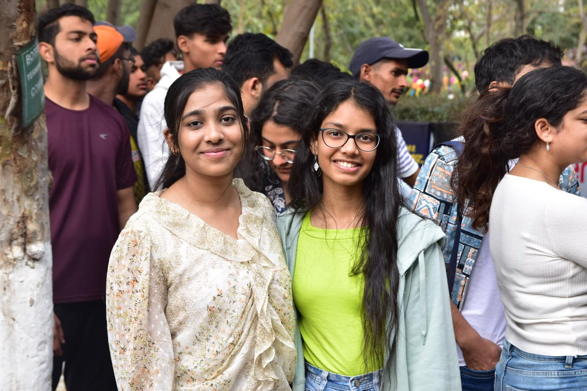
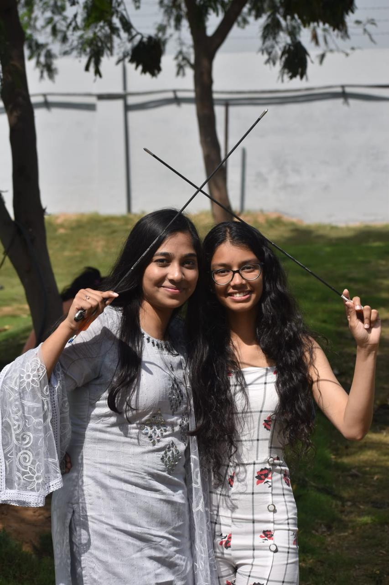
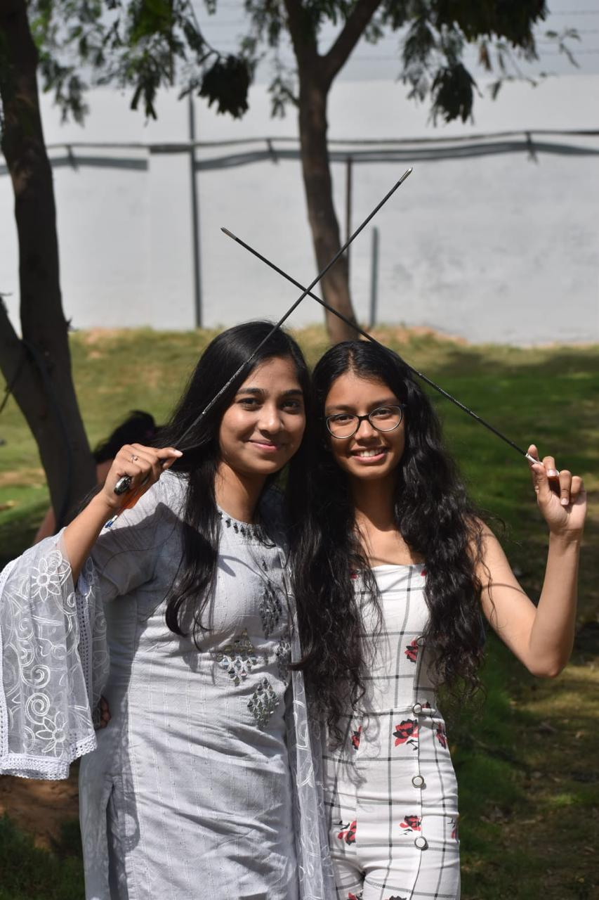
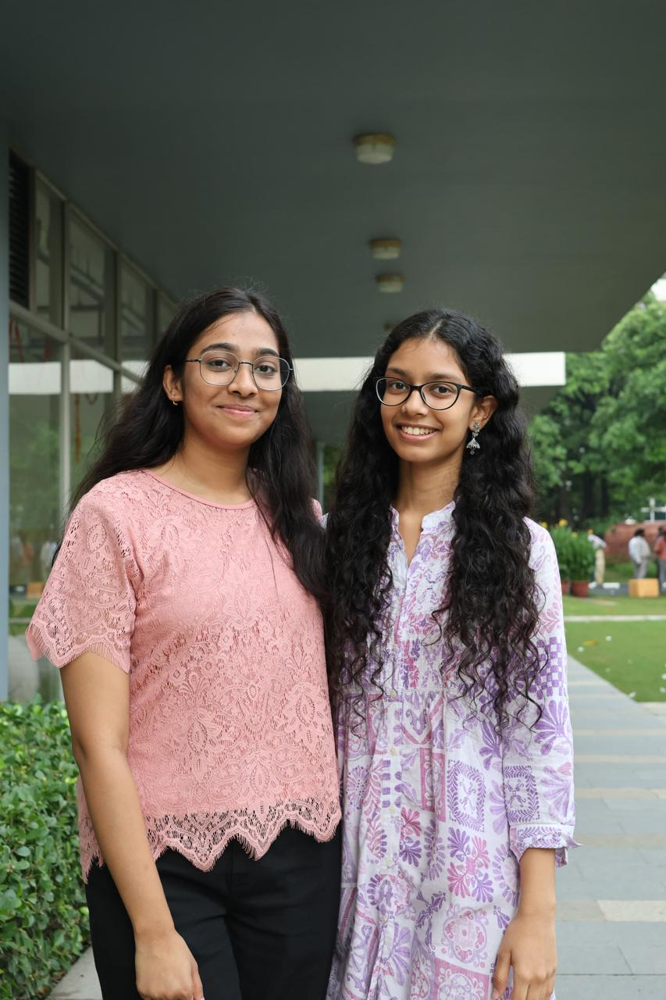
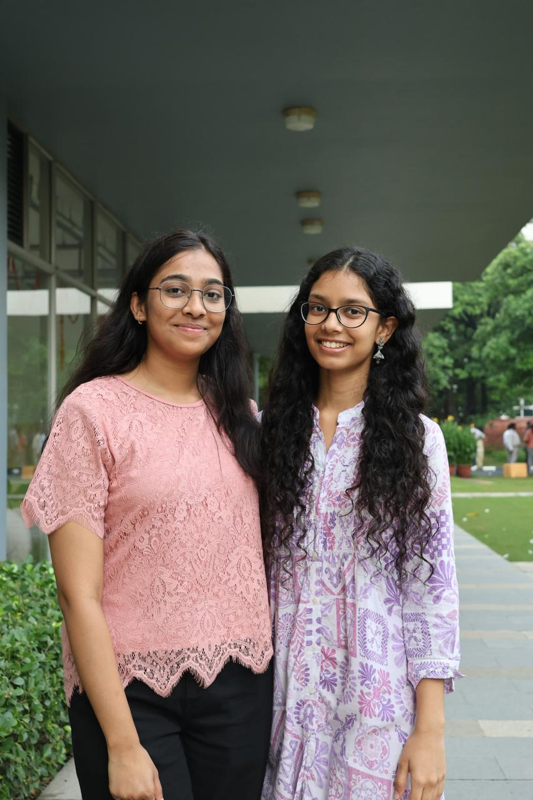

Welcome to the Photography and Cinematography Club (PAC), where creativity meets vision! At PAC, we are a passionate community of storytellers dedicated to capturing and sharing moments through the lens. Whether it's documenting campus events, hosting workshops, or producing captivating short films, our mission is to inspire and empower students to explore their artistic potential. From beginners to seasoned photographers and filmmakers, we offer a platform for learning, collaboration, and innovation. Join us in creating visual masterpieces and making memories last forever!

Join us for an intensive photography workshop on October 5, 2024. Learn advanced techniques and get hands-on experience with professional photographers.
Explore the beauty of nature through your lens on November 12, 2024. This guided walk will help you capture stunning landscapes and wildlife.

 

 

 
